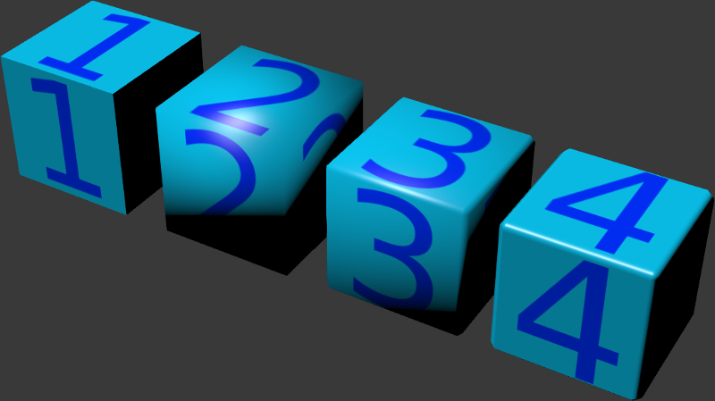
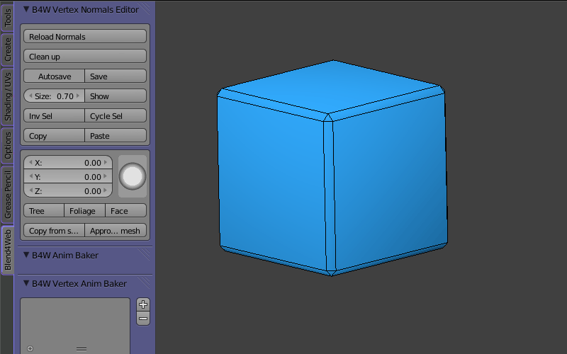
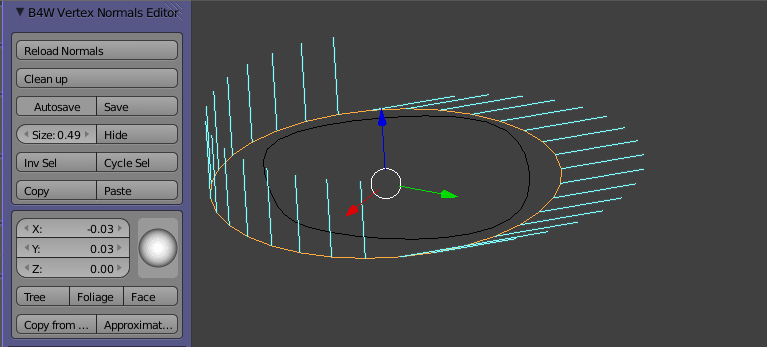
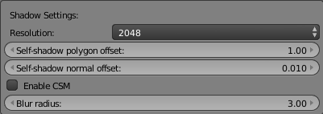
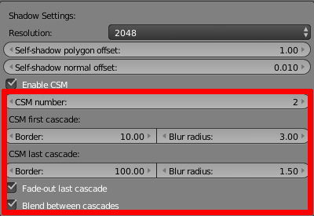

Освещение, тени и фон¶
Типы затенения¶
Результат расчета освещения (затенения) зависит от направления векторов нормалей. Поддерживаются стандартные типы затенения, использующиеся в Blender, Shading: Flat (используются нормали граней) и Shading: Smooth (используются интерполированные нормали вершин), а также их комбинации.

Если желаемый результат недостижим стандартными средствами, можно воспользоваться редактором нормалей.
Результат применения различных типов затенения и использования редактора нормалей:
{kind=link}
- Flat Shading
- Smooth Shading
- Smooth Shading + фаска
- Smooth Shading + фаска + редактирование нормалей
Редактор нормалей¶
С помощью редактора нормалей можно достичь результат, схожий в результатом применения карт нормалей. При этом метод редактирования нормалей является более предпочтительным с точки зрения потребления вычислительных ресурсов и видео-памяти.
Интерфейс редактора нормалей располагается на панели инструментов Blend4Web > B4W Vertex Normals Editor. Перед началом работы редактора для объекта необходимо включить режим затенения Shading: Smooth.
Пример работы редактора нормалей:
{kind=link}
- Демонстрация бегунка Scale и кнопки Show/Hide
- Демонстрация функции Face
- Демонстрация функции Foliage
- Демонстрация функции введения параметров вектора вручную (XYZ)
Изменять нормали возможно только для выделенных вершин. Векторы выделенных вершин будут подкрашены ярко-голубым цветом, невыделенных - тусклым синим. Чтобы их выделить, следует перейти в режим редактирования, выделить нужные вершины и вернуться в объектный режим.
После того, как вектор отредактирован, его направление необходимо сохранить, т.к. при переходе в режим редактирования и обратно нормали возвращаются в стандартное положение. Вектор можно задать несколькими способами: вручную, копированием с существующего объекта с отредактированными нормалями и используя несколько имеющихся опций.
Примечание
Если вы отредактировали группу нормалей и сохранили их, после выделения следующей группы необходимо нажать Reload Normals, чтобы уже отредактированные нормали вернулись в нужное положение, а потом уже переходить к следующей группе. В противном случае при повторном нажатии кнопки Save вы потеряете результаты предыдущего редактирования.
- Reload normals
- Восстанавливает нормали в последнее сохраненное инструментом положение.
- Clean Up
- Отменяет все произведенные инструментом действия, “сбрасывая” нормали в первоначальное состояние.
- Save и Autosave
- Сохранение результатов редактирования нормалей. При активации Autosave результат каждого изменения сохраняется автоматически.
- Size
- Длина отрезка, визуализирующего направление нормали.
- Show/Hide
- Показать/скрыть нормали.
- Inv Sel
- Invert selection. Инвертированное выделение. Аналог CTRL+I в режиме редактирования.
- Cycle Sel
- Cycle selection. Циклическое выделение. Позволяет переходить к следующей по номеру вершине. Кнопка может быть полезной при повершинном редактировании.
- Copy и Paste
- Скопировать направление вектора и назначить его другой вершине. Работает только с одной вершиной за операцию.
- Шкала XYZ и сфера направления
- Инструменты для изменения направления векторов вручную.
- Tree, Foliage и Face
- Кнопка Tree задает всем выделенным нормалям направление от 3D-курсора, Foliage направляет нормали строго вверх (чаще всего используется для настройки частиц травяного покрова и листвы деревьев), Face присваивает векторам направление нормали выделенного полигона.
- Copy from source mesh и Approximate from source mesh
- Кнопки копируют вектора нормалей с одного объекта на другой, при этом следует последовательно выделить исходный и целевой объекты. Разница между ними заключается в следующем. Первый способ требует точного соответствия этих объектов и копирует направление нормалей идеально точно. Вершины, не совпадающие с оригиналом, не затрагиваются. Второй способ работает с произвольной геометрией и приводит к приближенному результату. На практике второй способ часто бывает удобнее первого и работает с приемлемой точностью.
Пример использования функции Approximate from source mesh:
{kind=link}
В общем случае алгоритм редактирования нормалей следующий:
- Переход в режим редактирования
- Выделение нужных вершин
- Переход в объектный режим
- Reload Normals
- Редактирование выделенных нормалей
- Save (если Autosave не активна)
Необходимо учитывать, что привязка отредактированных нормалей к вершинам меша осуществляется по их номерам, которые могут измениться при редактировании геометрии меша. Это может привести к необходимости редактирования нормалей заново. Кроме того, результаты редактирования нормалей перекрываются некоторыми модификаторами, т.к. они меняют число или порядок вершин меша, поэтому желательно редактировать нормали после применения модификаторов. Модификатор Armature не влияет на работу инструмента.
Примечание
Eсли необходимо изменить меш с отредактированными нормалями, и при этом сохранить результаты редактирования, можно поступить следующим образом. Временно скопируйте этот объект, отредактируйте меш оригинала, сбросьте на нем нормали кнопкой Clean Up и затем с копии объекта перенесите направления нормалей с помощью кнопок Copy from source mesh или Approximate from source mesh. Сохраните результаты копирования или аппроксимации.
Освещение от источников света¶
На сцене может быть несколько (но не менее одного) источников света разного типа.
Типы источников света¶
Поддерживаются источники света следующих типов:
- Point
- Точечный. Свет распространяется из одной точки равномерно во все стороны, с постепенным затуханием.
- Sun
- “Солнце”. Свет распространяется из бесконечной плоскости прямолинейно в одном направлении, без затухания.
- Spot
- Прожектор. Свет распространяется из одной точки, с ограничением угла распространения, с постепенным затуханием.
- Hemi
- Полусфера. Свет распространяется из бесконечной полусферы, без затухания.
Настройка источников света¶
Производится во вкладке Object Data при выборе объекта-лампы.

- Color
- Цветовая характеристика света. Значение по умолчанию (1.0, 1.0, 1.0) (белый).
- Energy
- Интенсивность излучения. Значение по умолчанию 1.0.
- Falloff
- Тип затухания. Значение экспортируется, но в движке всегда используется Inverse Square (обратный квадратичный). Применяется для источников света типа Point и Spot. Значение по умолчанию Inverse Square.
- Distance
- Параметр затухания. Применяется для источников света типа Point и Spot. Значение по умолчанию 25.0.
- Specular
- Создание отблеска на объектах. По умолчанию включено.
- Diffuse
- Применение рассеянного освещения к объектам. По умолчанию включено.
- Spot Shape > Size
- Угол конуса в градусах. Применяется для источников света типа Spot. Значение по умолчанию 45º.
- Spot Shape > Blend
- Параметр смягчения края светового пятна. Применяется для источников света типа Spot. Значение по умолчанию 0.15.
- Blend4Web > Do not export
- Не экспортировать. По умолчанию отключено.
- Blend4Web > Generate shadows
- Источник света используется для расчета падающих теней. Применяется в случае наличия нескольких источников света. По умолчанию отключено.
- Blend4Web > Dynamic intesity
- Источник света используется для расчета изменения времени суток. Применяется для источников света типа “Солнце”. По умолчанию отключено.
Освещение от окружающей среды¶
Движок поддерживает 3 метода симуляции рассеянного освещения от окружающих объектов.
- “Плоское” освещение белым цветом.
- Полусферическая модель освещения, в которой задается цвет горизонта и цвет зенита, в результате чего объекты заливаются градиентом между этими цветами в зависимости от направления нормалей.
- Освещение с помощью карты окружения - т.н. методика image-based lighting.
{kind=link}
Настройка¶
- World > Environment Lighting > Energy
- Интенсивность освещения от окружающей среды. Значение по умолчанию 1.0.
- World > Environment Lighting > Environment Color
- Выбор метода симуляции рассеянного освещения: White - “плоское” освещение белым цветом, Sky Color - полусферическая модель , Sky Texture - освещение с помощью карты окружения. Значение по умолчанию White.
- World > Horizon Color и World > Zenith Color
- Если выбрана полусферическая модель рассеянного освещения Sky Color, цвет горизонта и цвет зенита задаются цветоподборщиками World > Horizon Color (цвет горизонта) и World > Zenith Color (цвет зенита). При выборе цвета рекомендуется активировать опцию World > Blend Sky.
Использование карты окружения¶
Для того, чтобы использовать карту окружения в целях реализации освещения от окружающей среды, необходимо:
- Включить опцию Environment Lighting во вкладке World.
- Выбрать метод Environment Lighting > Environment Color > Sky Texture.
- Перейти из вкладки World во вкладку Texture.
- Создать карту окружения, загрузить в нее соответствующее изображение.
- Для карты окружения на панели Blend4Web для значения Sky texture usage выбрать ENVIRONMENT_LIGHTING или BOTH (опция BOTH активирует также использование этой текстуры в качестве текстуры неба).
{kind=link}
Тени¶
Тени - один из важнейших элементов при рендеринге конечного изображения. Они предоставляют зрителю не только информацию о силуэте объектов, но и об их высоте и взаимном расположении, положении источника света и т.д.
Платформой Blend4Web реализуются такие техники, как каскадные карты теней (CSM) и смягченные тени (PCF).
Активация¶
- На объектах, отбрасывающих тени, включить опцию Blend4Web > Shadows: Cast во вкладке Object.
- На объектах, получающих тени, включить опцию Blend4Web > Shadows: Receive во вкладке Object.
- Убедиться, что включена опция Blend4Web > Render shadows во вкладке Scene.
{kind=link}
Настройка¶
- Направление
- В случае наличия нескольких источников света рекомендуется указать, какой именно источник света будет использоваться для расчета падающих теней, включив опцию Blend4Web > Generate shadows во вкладке Object Data при выборе объекта-лампы.
- Цвет
- Цвет тени определяется настройками освещения от окружающей среды.
Во вкладке World на панели Blend4Web > Shadow Settings находятся дополнительные настройки:
{kind=link}
- Resolution
- Разрешение используемой карты теней. Значение по умолчанию: 2048x2048px.
- Self-shadow polygon offset
- Коэффициент смещения полигона в зависимости от ориентации к источнику света. Значение по умолчанию: 1.
- Self-shadow normal offset
- Коэффициент смещения полигона по нормали. Значение по умолчанию: 0.01.
Последние две настройки служат для борьбы с артефактами самозатенения. Они проявляются на объектах, одновременно отбрасывающих и принимающих тени. Параметр Self-shadow polygon offset лучше справляется с артефактами во внутренних областях полигонов, а Self-shadow normal offset - в приграничных. Оба параметра приводят к искажению теней, поэтому рекомендуется держать их как можно меньшими.

- Enable CSM
- Включение каскадной модели теней; открывает доступ к расширенным настройкам. Отключено по умолчанию.
Эта опция позволяет выбрать один из следующих вариантов наложения теней:
- Стандартная модель, использующая одну оптимизированную карту теней, охватывающую всю сцену (Enable CSM отключена).
- Каскады теней (Enable CSM включена).
- Blur radius
- Коэффициент размытия теней, позволяющий настроить cмягченные тени. Значение по умолчанию: 3. Коэффициент 0 даст жесткие тени.

Смягченные тени могут повысить качество и реалистичность изображения. Они скрывают неизбежную при использовании основанных на изображениях техник зубчатость краев, особенно сильно проявляющуюся для карт теней низкого разрешения. Использование смягченных теней часто позволяет снизить разрешение без существенной потери качества.
Стандартная модель¶
Этот вариант больше подходит для маленьких сцен, состоящих из небольшого числа объектов. Благодаря оптимизации на таких сценах можно добиться более высокого качества теней по сравнению с каскадной моделью. Данный вариант проще и быстрее настроить, а использование всего лишь одной карты теней положительно сказывается на производительности.
Каскады теней¶
Примечание
Данные настройки поддерживаются только для источников освещения типа Sun. Для других источников каскады автоматически отключаются.
Для обеспечения приемлемого качества теней и одновременно покрытия значительных пространств необходимо использовать несколько стадий генерации теней (каскадов). При этом вблизи наблюдателя располагается каскад с наилучшим качеством, вдали от наблюдателя — с наихудшим. Этот вариант больше подходит для сцен среднего и большого размера, например, игровых уровней.
При включении предоставляет расширенные настройки:
- CSM number
- Количество каскадов теней. Поддерживается от 1 до 4 каскадов. Значение по умолчанию: 1.
- CSM first cascade border
- Размер первого каскада. Значение по умолчанию: 10.0.
- CSM last cascade border
- Размер последнего каскада. Значение по умолчанию: 100.0.
Размеры промежуточных каскадов интерполируются на основе последних двух параметров.
Примечание
При настройке следует помнить, что, увеличивая размер каскада, мы получаем на нем менее качественные тени. С другой стороны, уменьшение параметра CSM first cascade border приблизит к камере и сделает более заметными последующие менее детальные каскады. Уменьшение параметра CSM last cascade border приведет к исчезновению теней на более близком расстоянии от камеры. Однако, при использовании мягких теней качество в целом улучшится благодаря размытию на границах.

- CSM first cascade blur radius
- Коэффициент размытия на первом каскаде. Значение по умолчанию: 3. Коэффициент 0 даст жесткие тени.
- CSM last cascade blur radius
- Коэффициент размытия на последнем каскаде. Значение по умолчанию: 1.5. Коэффициент 0 даст жесткие тени.
Радиус размытия каждого промежуточного каскада интерполируется на основе этих параметров.
Примечание
Смягченные тени рекомендуется настраивать сначала на первом каскаде опцией CSM first cascade blur radius, а далее на всех остальных с помощью CSM last cascade blur radius. Часто на последнем каскаде может потребоваться размытие меньшее, нежели на первом. Это нужно для того, чтобы тени на последнем каскаде не стали слишком блеклыми из-за низкой детализации, к тому же это уменьшит нежелательные артефакты самозатенения.
- Fade-out last cascade
- Плавное исчезновение последнего каскада. По умолчанию включено.
- Blend between cascades
- Сглаживание границ между каскадами. По умолчанию включено.

Цвет фона¶
Цвет фона можно задать несколькими способами:
- Установить параметры Horizon Color и Zenith Color на вкладке World в Blender, предварительно выставив опцию Sky Settings > Render Sky.
- Поместить сцену внутрь модели (например, куба или сферы) с направленными внутрь нормалями, с материалом и опциональной текстурой.
- Разместить перед камерой поверхность с материалом и опциональной текстурой, присоединить ее к камере связью родитель-потомок. При необходимости настроить расстояние до поверхности, переднюю и заднюю плоскости отсечения камеры.
{kind=link}
Использовать текстуру неба.
Настроить динамически генерируемую атмосферу.
Установить параметр движка background_color, используя программный метод config.set(), предварительно отключив опцию Sky Settings > Render Sky на вкладке World в Blender. Установленное значение используется в качестве аргумента метода WebGL clearColor(). Для получения корректных результатов рекомендуется отключить прозрачность контекста WebGL (параметр alpha). Такая конфигурация используется по умолчанию в стандартном веб-плеере движка.
var m_cfg = b4w.require("config"); var m_main = b4w.require("main"); // gray m_cfg.set("background_color", new Float32Array([0.224, 0.224, 0.224, 1.0])); m_cfg.set("alpha", false); m_main.init(...);
В качестве фона можно использовать любой HTML контент, находящийся позади элемента canvas, который используется для рендеринга. Для это необходимо активировать прозрачность контекста WebGL (параметр alpha), предварительно отключив опцию Sky Settings > Render Sky на вкладке World в Blender. Для получения корректных результатов рекомендуется выставить полностью прозрачный черный цвет фона. Такая конфигурация используется по умолчанию в стандартном просмотрщике сцен SDK движка.
var m_cfg = b4w.require("config"); var m_main = b4w.require("main"); m_cfg.set("background_color", new Float32Array([0.0, 0.0, 0.0, 0.0])); m_cfg.set("alpha", true); m_main.init(...);
См.также